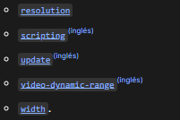
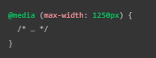

HTML adaptativo.
Erick Daniel Galaviz Saenz
Mat.238545
ClassList

@media
Las Media queries le permiten aplicar estilos CSS según el tipo general de un dispositivo
(como impresión o pantalla) u otras características como la resolución de la pantalla o el
ancho del viewport del navegador.

@media(max-width:1250px)
Muchas características de medios son características de rango, lo que significa que pueden
tener el prefijo "min-" o "max-" para expresar restricciones de "condición mínima" o
"condición máxima". Por ejemplo, este CSS aplicará estilos solo si el ancho del viewport de
su navegador es igual o menor que 1250px: